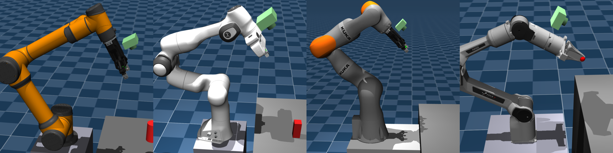
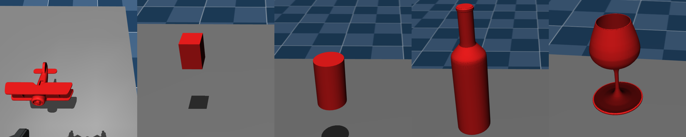
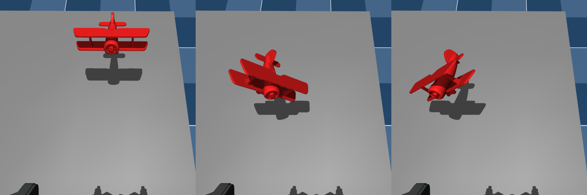

GraspBench is a simple, controlled MuJoCo environment for testing Vision-Language-Action (VLA), grasping, and motion-planning algorithms. It brings robots, objects, workspace layouts, feasibility checks, and task execution into one place, making it easier to compare different approaches under the same conditions.
In this project, we used GraspBench to test six grasp-generation algorithms. Each method suggests how a robot should pick up an object, and GraspBench checks whether the selected grasp can actually be reached and executed. The simulated robot approaches the object, closes its gripper, and attempts to lift it. A trial succeeds only when the recorded lift succeeds.
Each method is evaluated on the same 540 situations, producing 3,240 method-scenario evaluations in total. If a method returns no result or finds no usable grasp, that trial counts as a failure rather than being quietly removed.
GraspGen had the highest overall success rate, followed by EconomicGrasp. GPG produced thousands of possible grasps per situation but succeeded only 44.3% of the time. In other words, generating more choices does not automatically help a robot complete the task.
The results also changed with the robot and object. For example, a method could perform well with one arm or a box-like object and struggle with another arm or a thin, hollow shape. Grasping success therefore depends on the whole system—not only the grasp generator.



GraspBench deliberately uses one object at a time on a table in simulation. It is designed to diagnose grasping pipelines under repeatable conditions, not to replace tests in cluttered scenes or on physical robots. Repeated randomized trials and real-robot validation are natural next steps.